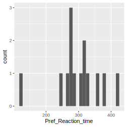
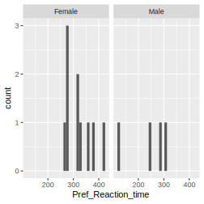
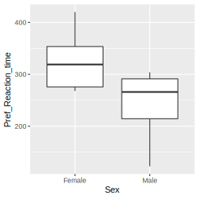
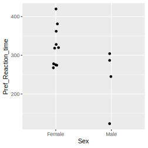

Chapter 11 Live data analysis demonstration
In the first class of the first week of an Introduction to Data Analysis course, we lead a live data analysis demonstration. Within one hour we go from question to answer, including collection of some data about each of the students. We believe this demonstration helps students connect with the importance and fun of the content of the course.
11.1 Introduction for intructors
All following sections are in the form of what one says to the students. The demo involves students entering data into a google form and then the instructor getting data from the googlesheet containing the responses. You should make a copy of the google form to use for yourself; this will mean that you also create a new google sheet of responses. You’ll need to update the relevant links below.
From here on is the rough script of what we tell the students…
Introduction
I thought it would be good to get hands on as early as possible, and to do so for something directly relevant to yourselves. So, we’re going to attempt something quite ambitious – in the next two hours or so, we’ll go through a whole data analysis from start to end.
Lets get started.
11.2 Meta-task
Write things that you don’t understand, and need to know about in subsequent classes. We will cover these things.
11.3 The question
What should be our question? As always, there are some influences and some constraints. We should ask a question of interest to us, and of some importance. And we should be able to collect the data, within our current constraints, necessary to answer the question.
The question we will address is “do male and female reaction times of students at the University of Zurich differ?”.
Why this question? Reaction times are important, safety, sport…
11.4 Expectation
What do you expect? Hands up if you think there will be no difference between men and women. Hands up if you think men will be slower. Hands up if you think women will be slower.
We can have a look on the internet, and pretty easily find lots of studies of reaction times and sex (e.g., A comparative study of visual and auditory reaction times on the basis of sex and physical activity levels of medical first year students (by the way, we may later in the course critique this paper).
Generally, we see that males tend to have faster reaction times than females. So we expect that to be the same for students at the University of Zurich.
Given that you know this pattern, and you are the subjects, its interesting to see if you women can buck the trend, perhaps by trying especially hard. Though know the men know you might do this, it probably won’t work!
11.5 How are we going to present the results?
Thinking backwards from how we present the final results, can often be quite useful.
I think a nice box and whisker plot will work here [sketch on a black/whiteboard)]. We will have two groups of reaction times. Put another way, we will have one explanatory variable (Sex) and one response variable (reaction time). The explanatory variable Sex is a categorical / discrete variable. The response variable is continuous.
We expect the distribution of male reaction times to be have a lower mean than the distribution of female reaction times.
We will look at this graph, and answer our question (wow, without any statistical test – YES!).
11.6 What statistical test will we use?
Reaction times (the response variable) we expect to be quite normally distributed [briefly explain what this means], though cannot be negative. Sex will be categorical with two levels (male and female). We don’t expect greater or less variation in reaction times among males compared to among females.
Based on these expectations, we will use a linear model, which assumes normally distributed residuals and equal variances among groups. The traditional name for the test is the T-test.
Based on convention, and little else, we will say there is a significant difference between male and female reaction times if the observed difference has a p-value of less than 0.05.
11.7 Selection of subjects
We usually need to very carefully select the subjects of our study. Ideally, as we’re interested in students at the University of Zurich (see the question), we would select a cross section of such students. Instead, you are going to be the subjects, and you are not representative of all students. You’re relatively young, on average, you’re studying natural sciences, etc. So we will have to be very cautious if we make statements about students at the University in general, and perhaps one might even now conclude that we can’t really answer the question.
Perhaps we need the question “do male and female reaction times of biology and biomedicine students, and some others, in their second year, at the University of Zurich differ?”
11.8 Ethical clearance and considerations
If we aimed to publish these results, or in some other way disseminate them, we would need ethical clearance for research involving humans. We’re not, so we don’t have ethical clearance.
However, please do not include any personal information in any of the data you contribute to the exercise.
11.9 Data collection
Create for yourself a unique ID code, so that if we want to collect more data about you, we could related the reaction time data to that. Write this code down somewhere safe, keep it.
Go to the Human Benchmark website.
Do the reaction time test with your preferred hand and write down your reaction time in fractions of a second. Do the same with your non-preferred hand.
While you’re there, also please do the other three tests, and write down your score. We don’t need these for our current question about reaction times, but we might look at this data later in the course.
Now go to this web page: https://goo.gl/forms/dUe9jIUEDkFqClaG2 [Instructors: make a copy of this and replace the link here with one to your copy] and enter your ID, sex, and scores. Please be careful!
Go ahead and do all that.
11.10 Look at the data!
Here is the link to the datasheet containing all the data you just recorded: https://docs.google.com/spreadsheets/d/1utldu37ngM_9sdLxJFOxmq5MKcwLV4VS0yAT0TvWuI8/edit?usp=sharing (Instructors: update this link to be for your googlesheet)
Lets have a look at it, see what you’ve done. (I’m scared! I know how difficult it is to enter data without making mistakes! And I have some experience of how different people are!)
11.11 Lets get the data into our data analysis software of choice (R, via RStudio)
First note that Owen has gone to the responses googlesheet, and in the “File” menu, clicked on “Publish to web…” and chosen to publish as “Comma separate values”.
Now we can read that web page of comma separated values into R:
# First we load a required package (we need to install this if we haven't already)
library(readr)
# also we will use some other packages
library(dplyr)
library(ggplot2)
# Now read in the data, using the read_csv() function. We give it the URL of the published version of the google sheet data.
# Instructors: update the url to be for your googlesheet
the_URL <- "https://docs.google.com/spreadsheets/d/e/2PACX-1vT-Uvx2LYX3APsXgjKw1XnIi-jKOi-QNAINmMu234JLvyDZezABPfO-_QnJ5ZtC3wed9pYdxs8-pyK7/pub?output=csv"
class_RTs <- read_csv(the_URL)
# Have a look at the data in R
#View(class_RTs)
# or just do
class_RTs## # A tibble: 14 x 16
## Timestamp `Please enter t… `What was your …
## <chr> <chr> <chr>
## 1 2/12/201… owen Male
## 2 2/22/201… STATGF Female
## 3 2/22/201… 1616 Female
## 4 2/22/201… hgztgeru Female
## 5 2/22/201… dfgadf Male
## # … with 9 more rows, and 13 more variables: `Please
## # enter your weight, in kilograms.` <dbl>, `Are you
## # right handed, left handed, or
## # ambidextrous?` <chr>, `Using your PREFERRED hand
## # to take the test: Please enter your FIRST reaction
## # time in milliseconds (e.g., 326).` <dbl>, `Using
## # your PREFERRED hand to take the test: Please enter
## # your SECOND reaction time in milliseconds (e.g.,
## # 326).` <dbl>, `Using your PREFERRED hand to take
## # the test: Please enter your THIRD reaction time in
## # milliseconds (e.g., 326).` <dbl>, `Using your
## # PREFERRED hand to take the test: Please enter your
## # FOURTH reaction time in milliseconds (e.g.,
## # 326).` <chr>, `Using your PREFERRED hand to take
## # the test: Please enter your FIFTH reaction time in
## # milliseconds (e.g., 326).` <dbl>, `Using your
## # PREFERRED hand to take the test: Please enter your
## # AVERAGE reaction time in milliseconds (e.g.,
## # 326).` <dbl>, `Using your NON-PREFERRED hand to
## # take the test: Please enter your average reaction
## # time in milliseconds (e.g., 326).` <dbl>, `Please
## # enter your score on the Verbal Memory test. (Use
## # your preferred hand to take the test.)` <dbl>,
## # `Please enter your score on the Number Memory
## # test. (Use your preferred hand to take the
## # test.)` <dbl>, `Please enter your score on the
## # Visual Memory test. (Use your preferred hand to
## # take the test.)` <dbl>, `Pick a random number from
## # 1 to 10, and enter it.` <dbl>11.12 Now we need to do some data wrangling (cleaning and tidying)
11.12.1 Clean up the column / variable names:
# Must be very careful to get the next line right!!! Really important!!!
names(class_RTs) <- c("Timestamp", "ID", "Sex", "Pref_Reaction_time_1",
"Verbal_memory_score", "Number_memory_score",
"Visual_memory_score",
"Weight_kgs", "Handed", "Nonpref_Reaction_time_ave", "Pref_Reaction_time_2",
"Pref_Reaction_time_3", "Pref_Reaction_time_4", "Pref_Reaction_time_5",
"Pref_Reaction_time", "Random_number")
class_RTs## # A tibble: 14 x 16
## Timestamp ID Sex Pref_Reaction_t…
## <chr> <chr> <chr> <dbl>
## 1 2/12/201… owen Male 80
## 2 2/22/201… STAT… Fema… 365
## 3 2/22/201… 1616 Fema… 250
## 4 2/22/201… hgzt… Fema… 366
## 5 2/22/201… dfga… Male 287
## # … with 9 more rows, and 12 more variables:
## # Verbal_memory_score <chr>,
## # Number_memory_score <dbl>,
## # Visual_memory_score <dbl>, Weight_kgs <dbl>,
## # Handed <chr>, Nonpref_Reaction_time_ave <dbl>,
## # Pref_Reaction_time_2 <dbl>,
## # Pref_Reaction_time_3 <dbl>,
## # Pref_Reaction_time_4 <dbl>,
## # Pref_Reaction_time_5 <dbl>,
## # Pref_Reaction_time <dbl>, Random_number <dbl>11.12.2 Check the variable types are correct.
- Timestamp should be a character
- ID should be a character
- Sex should be a character
- The remaining four variables should be numeric (
if fractional, if whole numbers).
## # A tibble: 14 x 16
## Timestamp ID Sex Pref_Reaction_t…
## <chr> <chr> <chr> <dbl>
## 1 2/12/201… owen Male 80
## 2 2/22/201… STAT… Fema… 365
## 3 2/22/201… 1616 Fema… 250
## 4 2/22/201… hgzt… Fema… 366
## 5 2/22/201… dfga… Male 287
## # … with 9 more rows, and 12 more variables:
## # Verbal_memory_score <chr>,
## # Number_memory_score <dbl>,
## # Visual_memory_score <dbl>, Weight_kgs <dbl>,
## # Handed <chr>, Nonpref_Reaction_time_ave <dbl>,
## # Pref_Reaction_time_2 <dbl>,
## # Pref_Reaction_time_3 <dbl>,
## # Pref_Reaction_time_4 <dbl>,
## # Pref_Reaction_time_5 <dbl>,
## # Pref_Reaction_time <dbl>, Random_number <dbl>11.12.3 Correct or exclude problematic data
This section should not be necessary, as the google form allows only numeric entries in fields that should have numbers.
If we have problems here, with variables of the wrong type, it probably means some of the data entry is a bit messed up.
# Have to do this live!!!
# e.g. to exclude observations with character entries in Reaction_time variable
class_RTs <- filter(class_RTs, !is.na(as.numeric(Pref_Reaction_time)))Once fixed, we need to make the variable have the correct type
11.12.5 Check the number of observations
Should be the same as we saw in the datasheet, which should be number of you in this classroom.
The number of observations and variables is given by R in the first line of output when we type the name of the data object:
## # A tibble: 14 x 16
## Timestamp ID Sex Pref_Reaction_t…
## <chr> <chr> <chr> <dbl>
## 1 2/12/201… owen Male 80
## 2 2/22/201… STAT… Fema… 365
## 3 2/22/201… 1616 Fema… 250
## 4 2/22/201… hgzt… Fema… 366
## 5 2/22/201… dfga… Male 287
## # … with 9 more rows, and 12 more variables:
## # Verbal_memory_score <chr>,
## # Number_memory_score <dbl>,
## # Visual_memory_score <dbl>, Weight_kgs <dbl>,
## # Handed <chr>, Nonpref_Reaction_time_ave <dbl>,
## # Pref_Reaction_time_2 <dbl>,
## # Pref_Reaction_time_3 <dbl>,
## # Pref_Reaction_time_4 <dbl>,
## # Pref_Reaction_time_5 <dbl>,
## # Pref_Reaction_time <dbl>, Random_number <dbl>11.13 Visualise the data
When we visualise the data, we’re trying to do at least three things, and are not trying to do at least one.
We’re not trying to make the most beautiful graph in the world, so we can put it in our report / presentation etc. We just want to clearly see the data.
We are trying to 1) do further checks for possible errors in the data, 2) making some initial assessments of how the data is distributed, 3) see what we think is the answer to our question.
A histogram of all the data:

Separate histograms for each sex:

A box and whisker plot:

Or just the data points (with some jitter, to separate overlapping points):

What do we think about the three things? Any likely errors? How is the data distributed (within and between groups)? Does it look like there is a difference in reaction times (if so, by how much on average, and which group is faster)?
11.14 Get the means
class_RTs %>% group_by(Sex) %>%
summarise(mean_RT=mean(Pref_Reaction_time),
sd_RT=sd(Pref_Reaction_time))## `summarise()` ungrouping output (override with `.groups` argument)## # A tibble: 2 x 3
## Sex mean_RT sd_RT
## <chr> <dbl> <dbl>
## 1 Female 322. 51.8
## 2 Male 240. 81.711.15 Effect size and practical importance?
Does the difference between the means (i.e. the effect size) seem of practical importance? How does that size of difference correspond to the difference, for example, between the reaction time of an elite athlete, and a random person? How does it correspond to the difference between the reaction time of a human and a fly?
11.16 Assess assumptions
Before we even start to think about running a statistical test, we must check if the specific test we intend to run is justified. That is, we must check if the assumptions of the test are likely to be met.
11.16.1 Independence
The t-test assumes that observations are independent.
How was the data collected (hopefully not one sex on one day, and the other on another day, or something similarly confounding)?
Do we have more than one observation per subject? Not in this case, because you typed in the average. But we could have. Then the observations from the same individual would not be independent of each other. They would share in common the person they originated from. This would make the statistical test unreliable. Its something we’ll look more closely at later in the course.
11.16.2 Normally distributed residuals
We can get a good idea about this, in this case, by looking at the distribution of the two groups of reaction times (see above). Obviously we need to have in mind some idea of what the normal distribution looks like, and how close the data have to look like one. There are quantitative tests for normality, we may look at them later.
11.16.3 Equal variance
The spread of the reaction times for men, and the spread for women, should be about the same.
We can get a good idea about this, in this case, by looking at the distribution of the two groups of reaction times (see above). Again, we need to have in mind how similar the variance can be, without invalidating this assumption the data. There are quantitative tests for equal variance, we may look at them later.
11.17 Do the statistical test
We have to do a test, or more generally, some statistics, to give some kind of assessment of certainty / uncertainty in our answer. Traditionally, this is done with a p-value, and if its lower than 0.05 we say the result is significant (i.e. the results are very consistent with no difference). If its higher than 0.05 we accept the null hypothesis that there is no difference.
Another way to quantify uncertainty, is to give the difference in the means of the two groups, and a measure of certainty in this difference. If the difference between the means close to zero, and the uncertainty overlaps zero, then we conclude there is no strong difference.
We’ll do this with a T-test, as we already planned. Before we go on, there is something very important we should figure out, and we should do this every time before we run a statistical test. Figure out the degrees of freedom.
There will be learning about this later in the course. For now, know that for a t-test the degrees of freedom are the number of observations minus two. Here that is 12. This is really important to figure out in advance, as its a great way to check that R is doing the test we think we’re telling it to do.
##
## Two Sample t-test
##
## data: Pref_Reaction_time by Sex
## t = 2.3, df = 12, p-value = 0.04
## alternative hypothesis: true difference in means is not equal to 0
## 95 percent confidence interval:
## 4.488 160.812
## sample estimates:
## mean in group Female mean in group Male
## 322.4 239.8Lots of information there. We will teach you how to read this in later lectures.
For now, we can find the p-value: 0.0399. And the difference between the means: -82.65 and the lower (4.488) and upper (160.812) 95% confidence limits on that difference.
11.18 Critical thinking
- How might the work be flawed?
- How might the analysis be flawed (assumptions violated)?
- Is the difference (i.e. effect size) small, medium, large, relative to differences caused by other factors?
- How general might be the finding?
- How do the qualitative and quantitative findings compare to those in previous studies?
- What could have been done better?
- What are the implications of the findings?
11.19 Report and communicate the results
11.19.1 The results as a sentence
We should write a sentence that gives the direction and extent of difference, and a measure of certainty / uncertainty in that finding. It is totally unnaceptable, though common, to just write “there was a significant difference”. If we want to give a p-value (and most people tend to expect to see one), we should remind about the statistical test used (remind because we may have already mentioned it) and give the degrees of freedom, the value of the test statistic, and the p-value.
Insert sentence here, once we have the results.
11.19.2 The results graphically
The aim here is to make a beautiful graph that very clearly communicates the findings! This doesn’t mean “fancy” and or “complex”. Often simpler is better. Getting the basic right is essential, of course.
ggplot() +
geom_boxplot(data = class_RTs,
aes(x=Sex, y=Pref_Reaction_time)) +
ylab("Reaction time (seconds)")Wow! That was easy.
11.19.3 Do not use a table
Here, a table is not necessary. The results are in the sentence and in the graph.